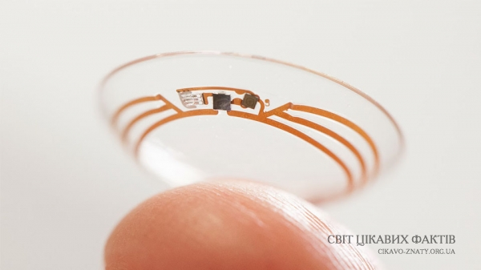

15 новітніх технологій, якими незабаром буде користуватися кожен
Технології постійно змінюються – і в цьому вони прекрасні. Кожен рік з’являються нові технології і через трохи часу вливаються в основний потік. Взяти, наприклад, розумний годинник. Два роки тому вони були прототипом, а вже до кінця 2014 року ми зможемо вибрати як мінімум з чотирьох хороших варіантів. Давайте подивимося, які ще технології обіцяють стати мейнстрімними найближчим часом.
Розумні окуляри

Ми приблизно уявляємо, що таке Google Glass, а деякі навіть отримали можливість випробувати їх. Незважаючи на тиск і суперечки, Google Glass – ще дуже молодий продукт. Всі одиниці Google Glass знаходяться в стадії бета-тесту. Протягом найближчих кількох років Google випустить власну версію, яка буде набагато дешевше. Також можна припустити, що конкуренти також захочуть випускати подібні окуляри.
Не всіх вони влаштовують з першого разу, але в кінцевому підсумку ми пройдемо і цей етап.
Розумні дані

Все більше і більше речей стають автоматизованими в наші дні, але все ще залишається те, що доводиться робити вручну. Наприклад, додавати новий номер у списку контактів. Дуже скоро і цим процесам може прийти кінець. Ряд компаній, начебто RelateIQ, вже працюють над тим, щоб автоматизувати ваш процес побудови контактного списку, поштових скриньок, повідомлень і інших рутинних речей. Настане час, коли досить буде сказати чиєсь ім’я – і у вашому телефоні автоматично утворюється новий контакт.
Пересувна електроніка

З вищезазначеними Google Glass і розумними годинами, певною мірою ми вже спостерігаємо, до чого все це йде. Розумні окуляри і розумні годинник – це соціальні пристрої, які з’єднують вас з зовнішнім світом.
Є й інша електроніка, яка працює в поєднанні з вашим тілом. Наприклад, навушники – вкладиші, які вимірюють частоту серцевих скорочень, контактні лінзи, які вимірюють рівень цукру в крові, тимчасові татуювання, які відкривають двері за допомогою технології NFC і багато іншого. Зараз вони не дуже популярні, але одного разу такий пристрій зможе врятувати вам життя, попередивши заздалегідь про серцевий напад. Для цього немає необхідності вбудовувати імплантати.
Розумні будинки

Цей пункт знаходиться на порозі того, щоб стати повсякденністю. У нас вже є розумні холодильники, які підкажуть вам про те, що закінчується певна їжа, або духовки, якими можна керувати за допомогою смартфона. У найближчому майбутньому ці речі об’єднаються в цілі будинки, які ви зможете контролювати за допомогою смартфона, планшета або комп’ютера.
Змінити температуру, перемкнути канал, отримати повідомлення про те, що пральна машинка закінчила роботу – заради цього не доведеться навіть вставати з дивана. Так, лінь – хороший двигун прогресу. Ви зможете заздалегідь включити духовку і розігріти собі їжу, поки їдете додому з роботи. З будинком можна буде буквально «поговорити».